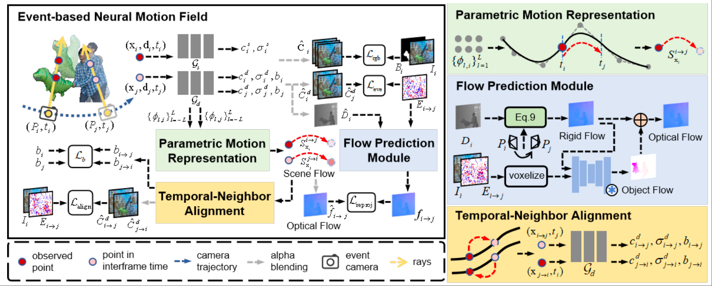
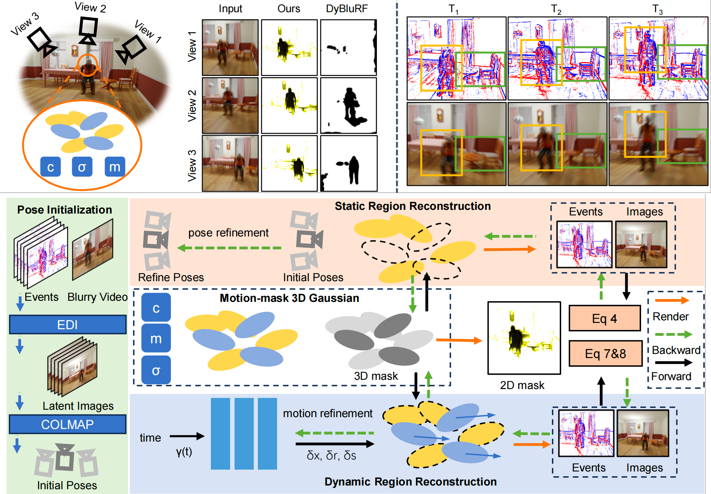
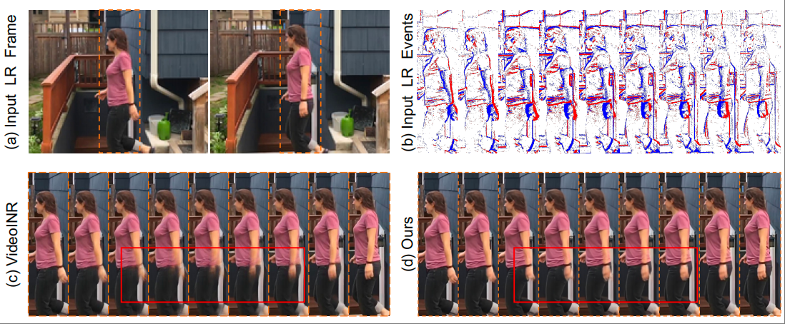
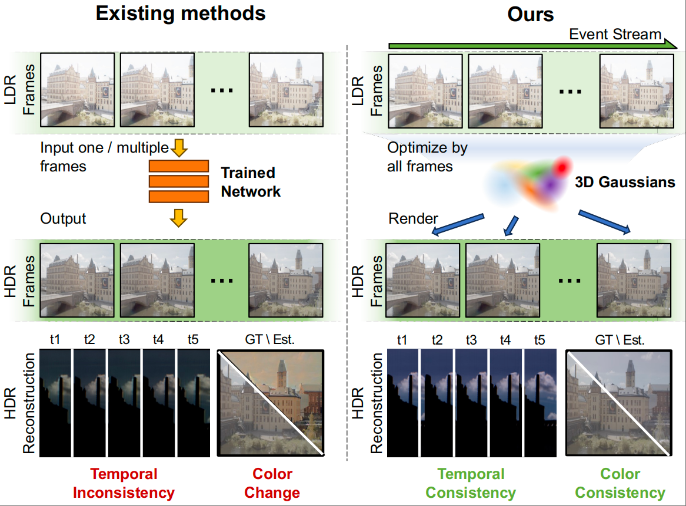
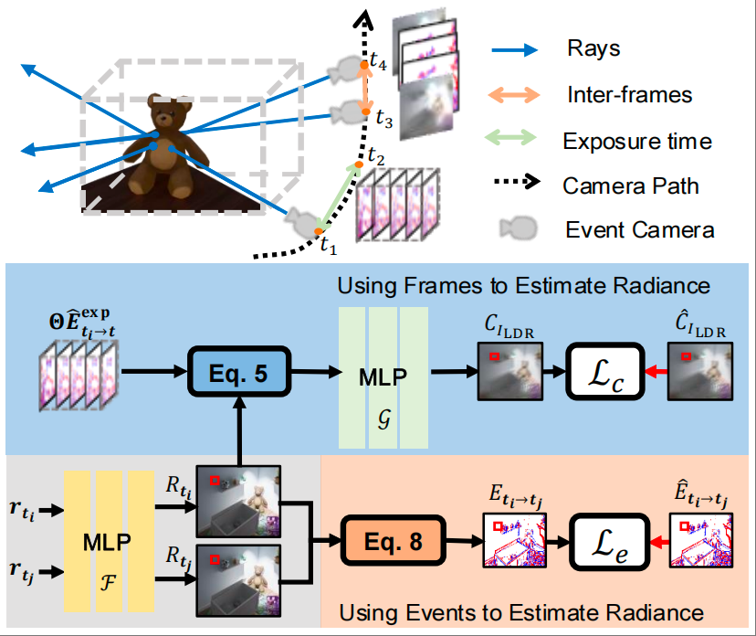
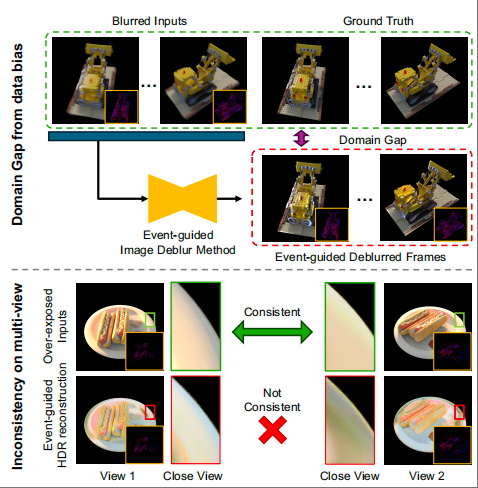
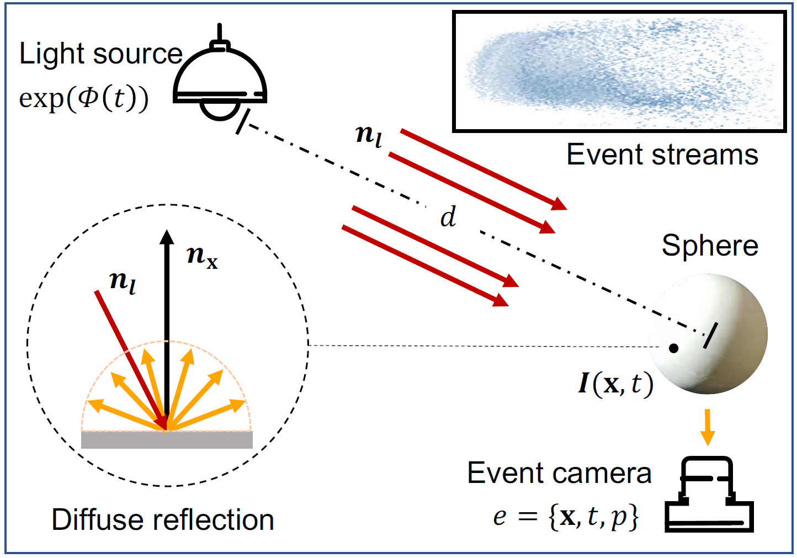

Research Introduction
Event cameras, as a new generation of neuromorphic vision sensors, can asynchronously record pixel brightness changes with microsecond-level temporal resolution and high dynamic range, bringing new possibilities for dynamic scene perception and reconstruction. Compared to traditional frame-based imaging, event signals demonstrate unique advantages in high-speed motion, low-light, and high-contrast scenarios.
Our research team has been exploring the frontier of Event-based vision since 2021, with main research topics including:
- Event-guided environmental perception
- Event-assisted physical modeling
Core Research Focus
Event-guided Environmental Perception
Exploring event camera-guided environmental perception, including ambient lighting, material properties, geometry, and semantic information perception to assist downstream tasks such as autonomous driving.
Event-assisted Physical Modeling
Researching physical modeling assisted by event cameras, including density, texture, and motion reconstruction of static/dynamic scenes to achieve high-fidelity modeling of the real world.
Group Members


Representative Research Achievements
-

-

-

-

-

-
Event-ID: Intrinsic Decomposition Using an Event CameraACM MM 2024
- Event-based model establishes relationship between events and intrinsic components.
- Multi-view consistency of events to extract specular-related clues.
- Event-guided intrinsic decomposition framework enables relighting under extreme conditions.
-
